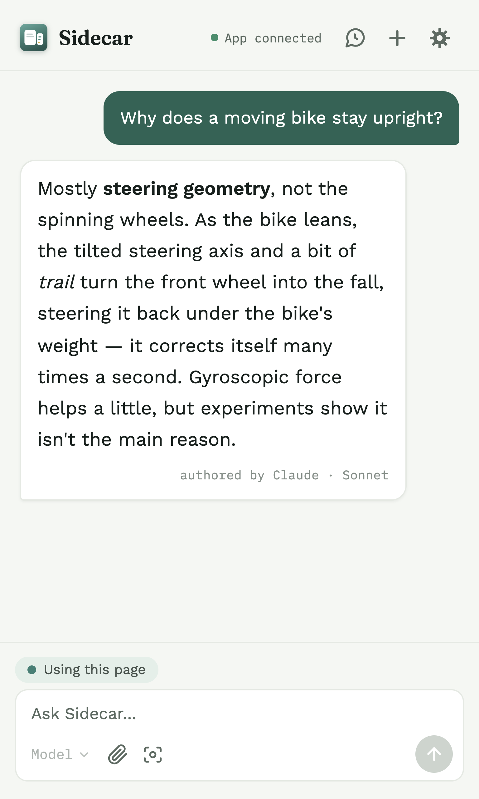
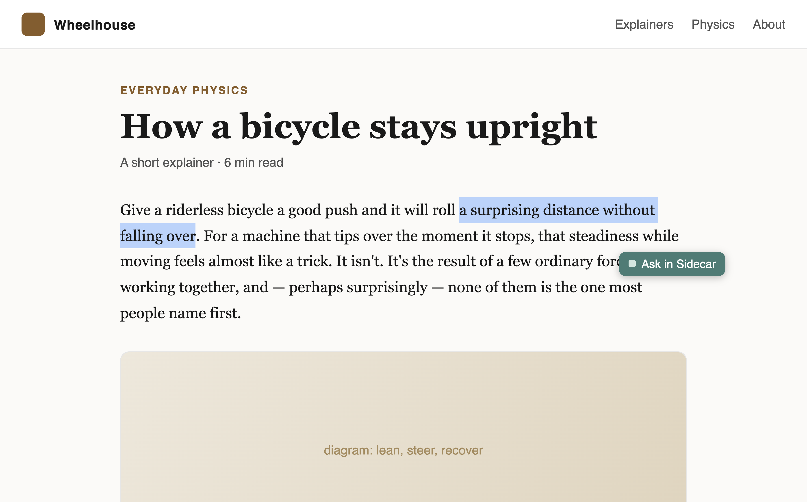
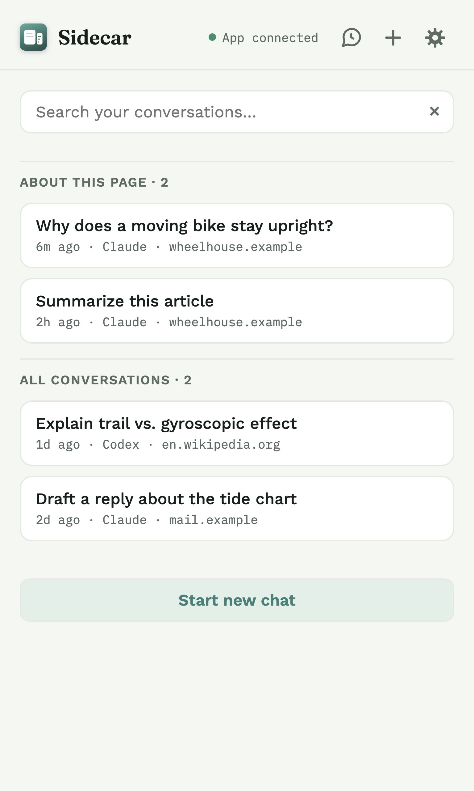
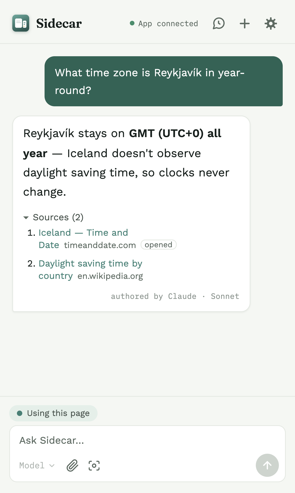
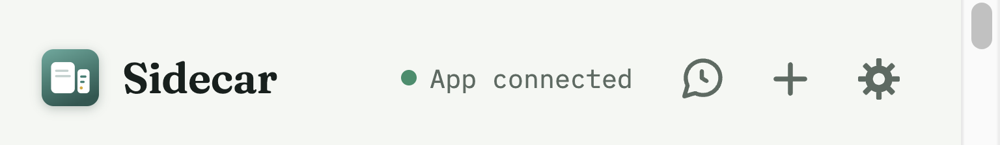
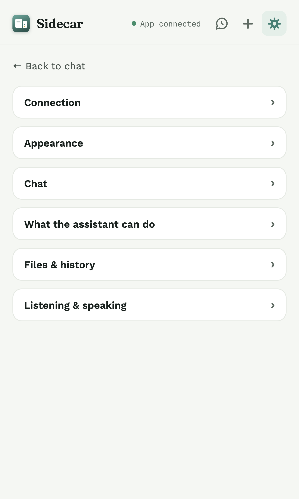

For Chrome & Brave · macOS
Sidecar is a personal AI in your browser's side panel — ask about the page in front of you or the video you're watching, answered by the Claude or Codex you already pay for.
You'll need: an Apple-Silicon Mac (M1 or newer) · macOS 13+ · Chrome or Brave · a Claude Code or Codex subscription

Answers come from Claude or Codex (your ChatGPT subscription) through your own sign-in — no extra account, no separate bill, no API key.
No server of ours sits in the middle. No analytics, no tracking, no ads. Your words go only to the assistant you chose.
Chats are saved on your own computer, and searching them happens there too. You decide what's kept.
What you can do
Sidecar reads the page or video you're on — on demand, only when you ask — so its answers are about what you're actually looking at.
Select text on any page and a small Ask in Sidecar button appears right by your cursor. One click sends it into the panel. Nothing leaves the page until you click.
Optional — off by default. Turn it on in Settings or with a right-click.

Every conversation is saved (unless you turn saving off). Search across all of them — by title, the pages they were about, or anything said in them — and pick one back up right where you are, even on a page you never chatted about.
The search runs entirely on your own computer.

When a question needs current information, the assistant looks it up on its own — no search button. The answer lists the reference links it drew on, so you can open them. Copying the answer brings the links along.
A web search goes out through your subscription, like your chat does.

And more
Reads the video's on-screen transcript, or listens and transcribes with Whisper when there isn't one. Optional — set up in Settings.
Screenshot the visible area or the whole page, crop a region, or attach an image, a PDF, or a text file.
A speaker button on any answer. Uses a voice on your Mac, or an optional natural offline voice you can download.
Choose Claude or Codex in Settings, then the model for each message — Sonnet, Opus, Haiku, or your Codex models.
How it works
Sidecar isn't a website you log into — it's a browser panel plus a small app on your Mac that talks to the AI you already use.
Where you chat. It reads the current tab's text only when you ask, and each conversation belongs to the page you started it on.
A small menu-bar app the panel talks to over your own computer — never over the internet. It has to be running for the panel to answer.
The app runs your own Claude Code or Codex to do the thinking — on your plan, through your sign-in.
Setup · about 5 minutes
Sidecar itself needs no terminal; Claude Code and Codex have their own installers. Full step-by-step instructions ship with the download — here's the shape of it.
Open the Sidecar app (a menu-bar app for Apple-Silicon Macs, macOS 13+). Leave it running while you browse.
Add Sidecar to Chrome or Brave, then open the side panel with the toolbar icon or ⌘⇧Y.
Whichever you'll use — that's the AI doing the answering, on your own subscription. You only need one.
When the panel's status line shows a green App connected, you're ready to ask your first question.

Using it
A quick tour of the controls you'll reach for.
Open the panel on any ordinary web page and just ask — “summarize this”, “what does this mean?”. Press Enter to send, ⇧Enter for a new line. (It works on normal pages, not on chrome:// pages.)
The bubble-with-clock button opens a searchable list of every saved conversation. Click one to pick it back up on the current tab.
The + button starts fresh. Change your mind? A banner offers to jump back to the conversation you were in.
The cog opens Settings — the highlight button, read-aloud voices, the backend picker, and what's saved all live here.
Press ↑ / ↓ in the message box to bring back something you asked before, to send again or edit.
While an answer is being written, the send button becomes Stop — click it to cut a long reply short.
Staying in control
Conversations are saved on your Mac so you can reopen them — your messages, the text you brought in, the pages you chatted about, and a web answer's source links. Deleting a chat and “forget this page” live on an admin page you open from the companion app's menu-bar icon.
Everything below is off by default — each is explained next to its switch in Settings.
| Setting | What it does | Leaves your Mac? |
|---|---|---|
| Highlight button | Shows the “Ask in Sidecar” button on selected text. | No — not until you click it |
| Save the pictures | Keeps captured/attached images in the saved chat. | No — on your Mac |
| Remember listening | Saves the video transcripts you captured. | No — on your Mac |
| Look at the page | Lets the assistant grab a screenshot when a question seems visual. | The screenshot, to your assistant |
| Show web pictures | Reveals pictures of what you asked about (after you click). | Yes — opens web pages to find them |
| Open live pages | Lets a search open pages for more detail. | Yes — via your subscription |
